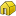

|
| Umístění Menu |
|---|
| Arch → Building |
| Pracovní stoly |
| Architektura |
| Výchozí zástupce |
| B U |
| Viz také |
| Arch Podlaží, Arch Staveniště |
Contents |
Popis
Stavba je speciální typ skupiny objektů FreeCADu, zvlášť přizpůsobené k prezentaci celých stavebních jednotek. Většinou jsou využívány pro uspořádání Vašeho modelu obsahujícího objekty podlaží
Použití
- Volitelně lze vybrat jeden nebo více objektů, které lze vložit do Vaší nové stavby
- Stiskněte tlačítko  Stavba nebo klávesy B a U
{kind=link}
Volby
- Po vytvoření stavby můžete přidávat další objekty pomocí myši přetáhnutím a upuštěním (drag and drop) na požadované místo v panelu stromu nebo použitím nástroje
 Přidat
Přidat - Odstranit objekty ze stavby můžete podobně myší přetáhnutím a upuštěním objektu mimo panelu stromu nebo použitím nástroje
 Odebrat.
Odebrat.
Skriptování
Nástroj Stavba může být použit v makrech a z konzoly Pythonu použitím následující funkce:
makeBuilding ([objectslist])
vytvoří stavbu včetně objektů ze seznamu objectslist
Příklad:
import Arch Arch.makeBuilding()